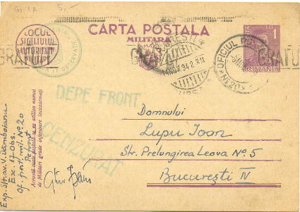
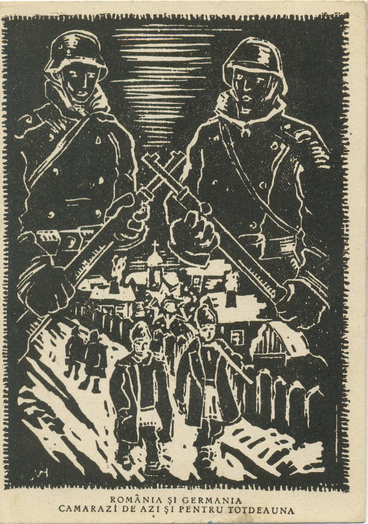
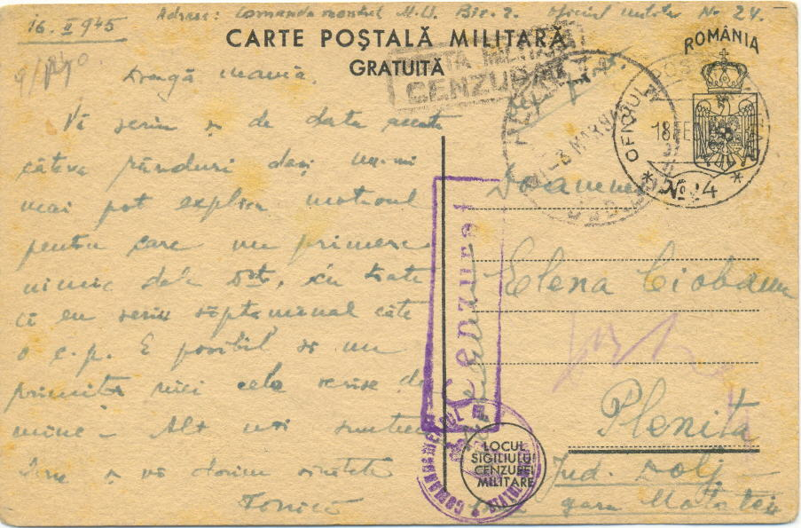

There are two categories of Romanian postal stationery. The one where the rates for mailing were reduced for soldiers quartered in barracks during peacetime, and behind the lines in garrisons and other situations during the war. The other where the cards were free and used by soldiers in front line situations and war zones.
In this study only the free stationeries will be discussed as the others are discussed in the existing Romanian catalogues. It is important to appreciate that only about half the mail coming from war zones was written on free stationery items. The other half were written on regular full-postage civilian postcards or used full-postage letters.
Until definitive free military stationery (FMS) was issued in June - August of 1941 provisional stationery was used. These were the reduced rate postcards that were overprinted using a mechanical roll or hand impression which read "Gratuit" (Free).

P.1 Provisional GRATUIT stationery

The definitive FMS for the Romanian army consisted of free military postcards (FMPC) and Campaign / Field Letters (FL).


3.3 In addition to the features of Type 3.1 this card has on the right half of the front an 89 x 15 mm blue rectangular band over the address lines. The black drawing show two children singing Christmas carols on a snow-bound village street. Above this there are two protecting soldiers, one Romanian and one German. Below the text reads, "Romania and Germany, comrades for today and for ever" The color of the card is light cream or dirty white.


3.5. This card provides a dramatic historical reversal to that of 3.3 above. It was issued after September 1944 and has a different front. It has the Kingdoms' arms, printed stamp, title and seal without other features. The multicolored drawing showing Romanian and Russian soldiers stepping across the northern Transylvanian border and attacking a German soldier. The text reads "Long live Romanian-Soviet brotherhood in arms" and "The Romanian army together with the glorious Red army fight to annihilate the invading Hitlerites"